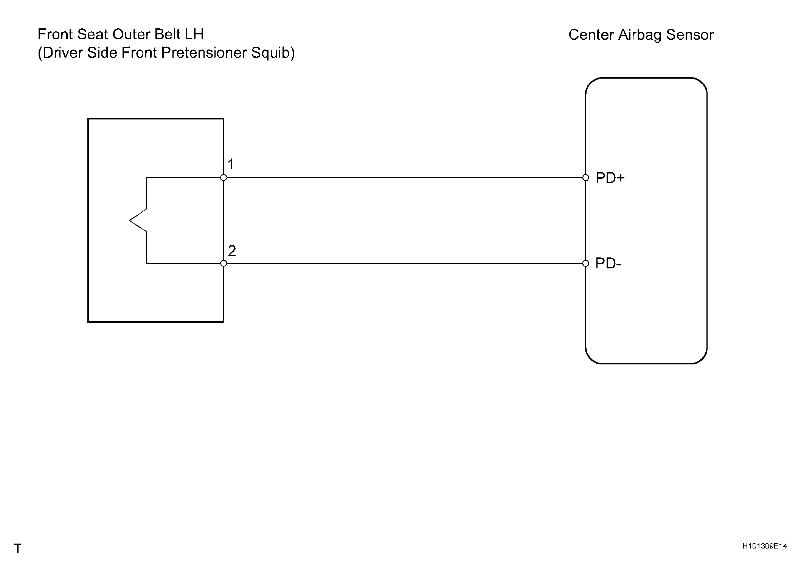

DTC B1900/73 Short in Driver Side Front Pretensioner Squib Circuit; DTC B1901/73 Open in Driver Side Front Pretensioner Squib Circuit; DTC B1902/73 Short to GND in Driver Side Front Pretensioner Squib Circuit; DTC B1903/73 Short to B+ in Driver Side Front Pretensioner Squib Circuit: Wiring Diagram

Courtesy of © TOYOTA, LICENSE AGREEMENT TMS1002